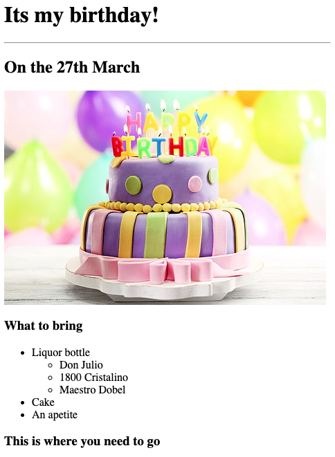

Eduardo's Portfolio
I'm a web developer
Movie Ranking Project
if you want to see the proyect more closely, click on the hyperlink.
Birthday Project

if you want to see the proyect more closely, click on the hyperlink.
Contact me
About me